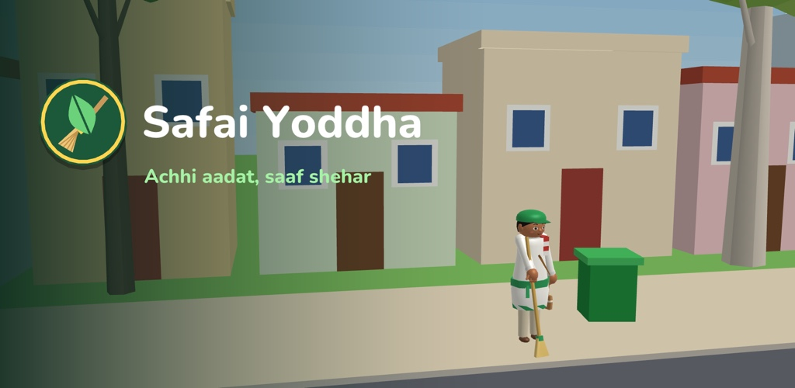

Safai Yoddha is a game for children (and their families) about good habits. Walk your town as the Yoddha: pick up litter and put it in the right dustbin, kindly stop people who litter, save water, plant trees, help people cross the road, answer SOS calls and put out fires – and watch your town become cleaner day by day.

- Plays offline; ten Indian languages.
- Teaches civic sense, kindness and road safety through play.
- No accounts, no chat. Optional rewarded ads only when the player taps for one.